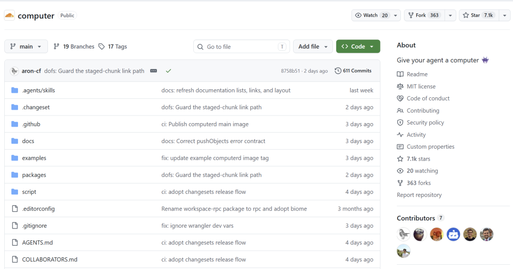
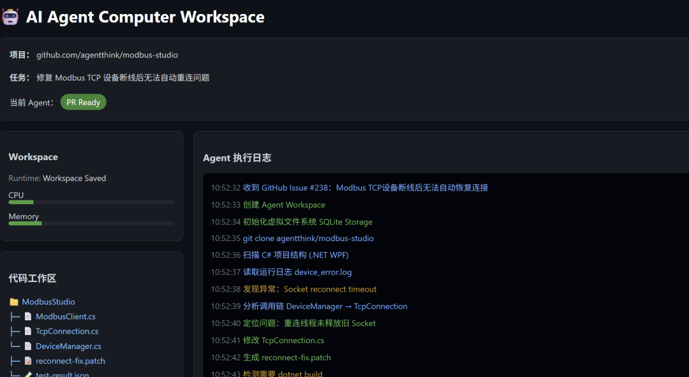
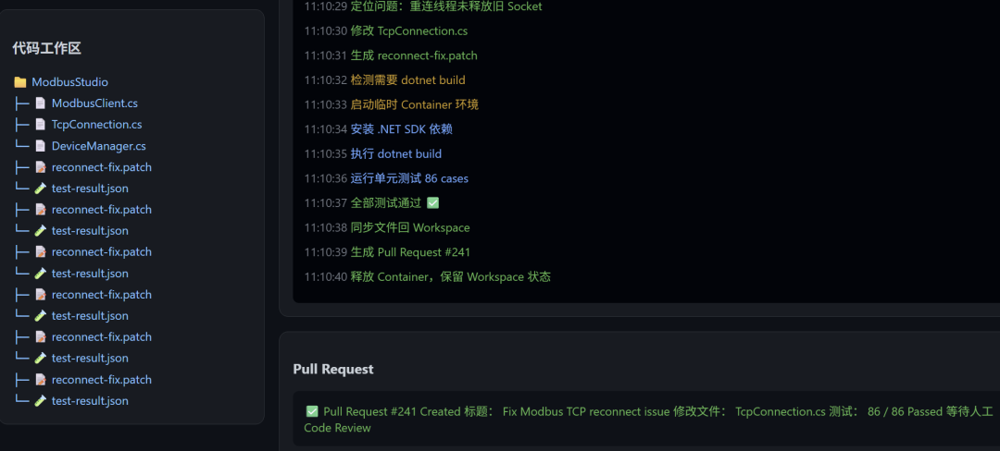
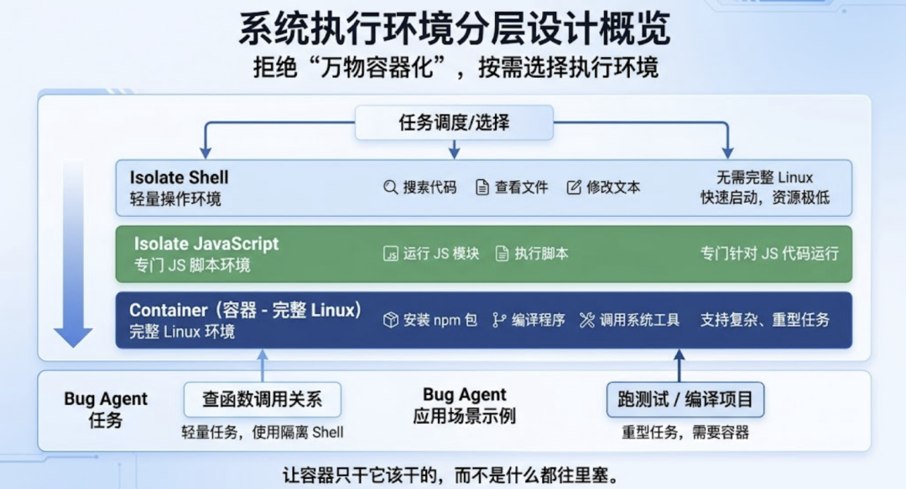
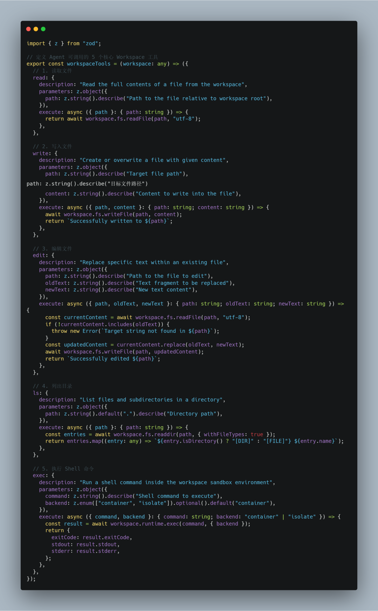
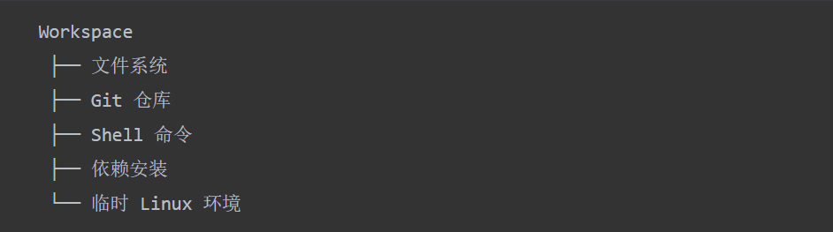
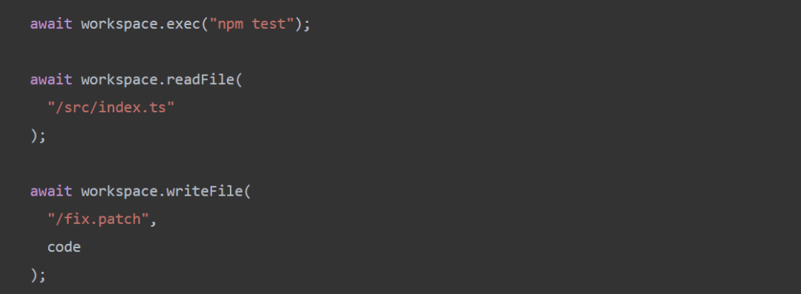
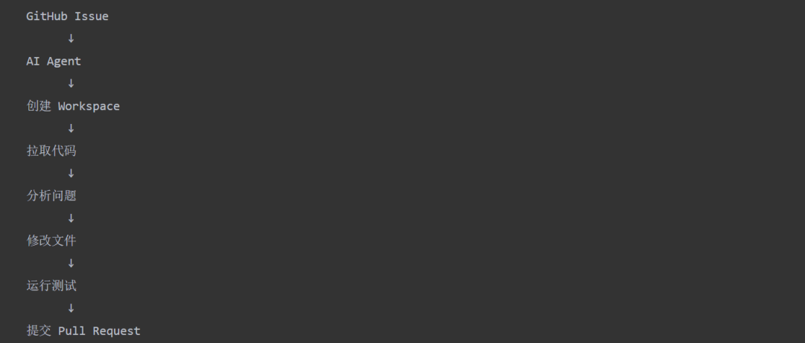

最近几个月来，AI 编程 Agent 赛道已经卷得非常厉害了。
Claude Code、Codex、Cursor 一个比一个强。
但是很少有人会去想一个问题，这些Agent是在什么样的机器上运行的？
答案是每个人一个容器。每一个 Agent 启动的时候，后面就有一个完整的Linux环境。
听上去很合理，但是你要算一算。
如果公司给每一个员工的Agent都配一个容器的话，全世界的算力加起来也不够。
Cloudflare 认为这是不合理的。所以他们新开源了一个项目。
它叫 computer，在 GitHub 上有 7000 多个 Star。

其实就是给每个AI Agent配备一台虚拟电脑。文件系统、shell、包管理器等等一应俱全。
看完它的设计后，我最大的感受是：
它关注的不是如何让 Agent 更聪明，而是如何让 Agent 更像一个真正的数字员工。
一个真实场景：Agent 如何拥有自己的电脑
假设公司里有一个 Agent 来处理GitHub上的Bug。
它每天要做的工作是：分析Issue、拉取代码、定位问题、修改代码、运行测试，最后提交Pull Request。
传统的做法是准备一个固定的容器，在里面预先安装好Node.js、Python、Git等以及各种依赖。
简单明了，但是问题也很明显：上午修好了bug之后，到了下午没有任务的时候容器还会占用资源。
几千个Agent同时运行，成本会越来越高。
computer 的想法并不是给每个 Agent 都配备一台永久的机器，而是提供一个工作空间。

它把代码、文件和状态都存储在Workspace里。
Agent在轻量环境中做简单的任务，只有当需要安装依赖、编译项目、运行复杂的程序的时候才会启动完整的容器。
任务完成之后，Container 被释放了，但是 Agent 的工作状态会被保留下来。

这个设计很符合未来 Agent 的长期协作者角色，而不是一次性脚本。
有人要好奇，它是怎么做到的
01 虚拟文件系统。
我认为 Computer 最牛的设计之一就是没有把 Agent 当作临时工来用，而是为它配备了一个长期存在的文件系统。
Workspace 运行在 Durable Object 中，用 SQLite 来存储状态，Agent 的操作就像在本地文件上一样：
读、写、建目录、搜索等操作都很方便。
这些基本的能力看起来很简单，但是对于 Agent 来说太重要了。
如果每次启动都要从头做起的话，哪来的连续工作能力？
比如Bug Agent今天只改了一半的代码，第二天重启就可以继续之前的进度。
这一步，是从聊天助手变成工程助手的关键。
02 三套执行后端。
另一个让我留意的地方是，它没搞万物容器化，而是一共设计了三种不同的运行环境。
第一种是Isolate Shell，只做简单的操作，比如搜索代码、查看文件、修改文本等，不需要启动整个Linux系统。
第二种是Isolate JavaScript，只运行JS模块和脚本。
第三种是Container，包含完整的Linux环境，用来安装npm包、编译程序、调用系统工具。

回到Bug Agent的场景中去，查一下函数调用关系，根本不需要启动容器，只有真正跑测试、编译项目时才需要。
这样分层之后，容器就只做它应该做的事，不会把一切都塞进去。
03 双向文件同步。
很多人盯着模型能力，我倒觉得底层文件管理同样关键。
Computer 没有把整个目录都复制过来，而是增量同步，只传输发生变化的部分。
比如几个GB的大项目，Agent只修改了一行代码，同步的时候不需要重新拷贝整个工程。
还可以分块传输、断点续传，并且会自动跳过无效文件。
这些设计对普通应用可能不起眼，但对 Agent 来说太要命了。
它的工作方式就是读很多文件、改很多文件、产生很多文件。
底层同步跟不上的话，再好的模型也是没有用的。
04 AI SDK 工具集。
computer 还给了 Agent 一套工具，直接就能用：
read、write、edit、ls、exec。Agent 就拿这些操作自己的 Workspace。

我认为这就是未来Agent平台的发展方向，文件管理、执行命令、切换环境等基本工作，不需要每个开发者都再重复一遍。
特别是exec，它会根据任务来选择环境：
用Isolate看代码，装依赖切到 Container。
这种自动选择能力，以后会是 Agent 基础设施的重要部分。
想试的话，装起来很简单
想体验 computer，并不是去下载安装一个桌面软件。
它更像是一个给 AI Agent 准备工作电脑的开发工具。
比如说你要做一个自动修Bug的Agent：
用户提交了 GitHub Issue 后，Agent 可以创建自己的 Workspace，拉取项目代码，分析文件，运行测试，在需要编译的时候再临时启动 Container。
安装过程很简单：
npm install @cloudflare/computer
然后在你的Agent项目中创建一个工作区：
const workspace = new Workspace({
storage: this.ctx.storage
});
创建完成之后，Agent 就有了类似电脑的能力：

例如：

这样Agent就可以读取项目代码、修改文件、执行命令，并且生成测试结果。
整个过程就像一个程序员的工作流程一样：

不过需要注意，computer 目前并不是一个普通用户打开就能用的软件。
它更适用于开发者去创建自己的 Agent。
需要自己写代码。
另外，Container 后端需要使用到 Docker，目前只支持 Linux x64 环境。
写在最后
我认为computer最大的价值并不是提供了一个新的文件系统，而是提出了一个值得思考的问题：
AI Agent 时代，我们到底应该如何给 Agent 配一台电脑？
过去：一个应用，需要一台服务器。
后来：一个服务对应一个容器。
未来：一个Agent要有一个Workspace。
目前来看，它更像是一种AI Agent的基础设施，并不是一个完整的产品。
所以我的判断是：computer 现在更像一个方向验证，而不是成熟商业方案。
有兴趣的朋友可以去探索一下。
项目地址：https://github.com/cloudflare/computer
我这个公众号之前发过很多有意思的开源项目，可以关注一下。
在后台回复关键词通过 AI 来找你想要的项目。